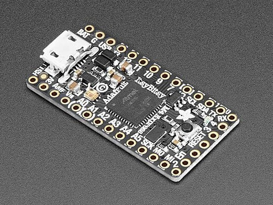

Quick reference for the SAMD21/SAMD51 family¶
{kind=link}
The Adafruit ItsyBitsy M4 Express board.
Below is a quick reference for SAMD21/SAMD51-based boards. If it is your first time working with this board it may be useful to get an overview of the microcontroller:
Installing MicroPython¶
See the corresponding section of tutorial: Getting started with MicroPython on the SAMD. It also includes a troubleshooting subsection.
General board control¶
The MicroPython REPL is on the USB port, configured in VCP mode. Tab-completion is useful to find out what methods an object has. Paste mode (Ctrl-E) is useful to paste a large slab of Python code into the REPL.
The machine module:
import machine
machine.freq() # get the current frequency of the CPU
machine.freq(96_000_000) # set the CPU frequency to 96 MHz
The range accepted by the function call is 1_000_000 to 200_000_000 (1 MHz to 200 MHz) for SAMD51 and 1_000_000 to 54_000_000 (1 MHz to 54 MHz) for SAMD21. The safe range for SAMD51 according to the data sheet is up to 120 MHz, for the SAMD21 up to 48Mhz. Frequencies below 48Mhz are set by dividing 48Mhz by an integer, limiting the number of discrete frequencies to 24Mhz, 16Mhz, 12MHz, and so on. At frequencies below 8 MHz USB will be disabled. Changing the frequency below 48 MHz impacts the baud rates of UART, I2C and SPI. These have to be set again after changing the CPU frequency. The ms and µs timers are not affected by the frequency change.
Delay and timing¶
Use the time module:
import time
time.sleep(1) # sleep for 1 second
time.sleep_ms(500) # sleep for 500 milliseconds
time.sleep_us(10) # sleep for 10 microseconds
start = time.ticks_ms() # get millisecond counter
delta = time.ticks_diff(time.ticks_ms(), start) # compute time difference
Clock and time¶
Two groups of functions are provided for time information. All boards have the datetime(), mktime() and time() functions. Boards with a 32kHz crystal also provide an RTC() module. The epoch start date is 1.1.2000.
Use the time module:
import time
date_time = time.localtime() # Show the actual date/time information
date_time = time.localtime(seconds) # decode the date/time form the seconds value
seconds = time.mktime(date_time_tuple) # Convert seconds to a datetime tuple
second = time.time() # Return the actual system time.
The format of the date_time tuple follows the standard. The µs value of the date_time
tuple is ignored. On boards without the RTC module, time.localtime(seconds) sets the
system time. Use of the Use the RTC module:
from machine import RTC
rtc = RTC()
date_time = rtc.datetime() # return the actual date & time.
rtc.datetime(date_time_tuple) # Set date & time, ignoring weekday
date_time = rtc.now() # Return date & time in Unix order.
rtc.calibration(value) # Set a calibration factor
The weekday value set will be ignored and calculated in the returned tuple from the actual date. rtc.now() is only provided at SAMD51 boards. The value used in the rtc.calibration() call has a range from -127 - 127. It defines roughly a ppm quantity, by which the clock can run faster or slower.
Timers¶
The SAMD21/SAMD51 uses software timers. Use the machine.Timer class:
from machine import Timer
tim0 = Timer()
tim0.init(period=5000, mode=Timer.ONE_SHOT, callback=lambda t:print(0))
tim1 = Timer()
tim1.init(period=2000, mode=Timer.PERIODIC, callback=lambda t:print(1))
The period is in milliseconds.
Pins and GPIO¶
Use the machine.Pin class:
from machine import Pin
p0 = Pin('D0', Pin.OUT) # create output pin on GPIO0
p0.on() # set pin to "on" (high) level
p0.off() # set pin to "off" (low) level
p0.value(1) # set pin to on/high
p2 = Pin('D2', Pin.IN) # create input pin on GPIO2
print(p2.value()) # get value, 0 or 1
p4 = Pin('D4', Pin.IN, Pin.PULL_UP) # enable internal pull-up resistor
p7 = Pin('PA07', Pin.OUT, value=1) # set pin high on creation
Pins can be denoted by a string or a number. The string is either the pin label of the respective board, like “D0” or “SDA”, or in the form “Pxnn”, where x is A,B,C or D, and nn a two digit number in the range 0-31. Examples: “PA03”, PD31”.
Pin numbers are the MCU port numbers in the range:
PA0..PA31: 0..31
PB0..PB31: 32..63
PC0..PC31: 64..95
PD0..PD31: 96..127
Note: On Adafruit Feather and ItsyBity boards, pin D5 is connected to an external gate output and can therefore only be used as input.
UART (serial bus)¶
See machine.UART.
# Use UART 3 on a ItsyBitsy M4 board
from machine import UART
uart3 = UART(3, tx=Pin('D1'), rx=Pin('D0'), baudrate=115200)
uart3.write('hello') # write 5 bytes
uart3.read(5) # read up to 5 bytes
The SAMD21/SAMD51 MCUs have up to eight hardware so called SERCOM devices, which can be used as UART, SPI or I2C device, but not every MCU variant and board exposes all TX and RX pins for users. For the assignment of Pins to devices and UART signals, refer to the SAMD pinout.
PWM (pulse width modulation)¶
Up to five timer device of the SAMD21/SAMD51 MCUs are used for creating PWM signals.
The PWM functions are provided by the machine.PWM class. It supports all basic methods listed for that class.
# Samples for Adafruit ItsyBitsy M4 Express
from machine import Pin, PWM
# create PWM object from a pin and set the frequency and duty cycle
pwm = PWM(Pin('D7'), freq=2000, duty_u16=32768)
pwm.freq() # get the current frequency
pwm.freq(1000) # set/change the frequency
pwm.duty_u16() # get the current duty cycle, range 0-65535
pwm.duty_u16(200) # set the duty cycle, range 0-65535
pwm.deinit() # turn off PWM on the pin
pwm # show the PWM objects properties
PWM Constructor¶
- class PWM(dest, *, freq, duty_u16, duty_ns, invert, device)
Construct and return a new PWM object using the following parameters:
dest is the Pin object on which the PWM is output.
PWM objects are provided by TCC timer module. The TCC timer modules have up to six channels and eight outputs. All channels of a module run at the same frequency, but allow for different duty cycles. Outputs are assigned to channels in modulo-n fashion, where n is the number of channels. Outputs of a channel have the same frequency and duty rate, but may have different polarity. So if for instance a module has four channels, output 0 and 4, 1 and 5, 2 and 6, 3, and 7 share the same frequency and duty rate.
Only one of duty_u16 and duty_ns should be specified at a time.
Keyword arguments:
freq should be an integer which sets the frequency in Hz for the PWM cycle. The valid frequency range is 1 Hz to 24 MHz.
duty_u16 sets the duty cycle as a ratio
duty_u16 / 65536.duty_ns sets the pulse width in nanoseconds. The limitation for X channels apply as well.
invert=True|False. Setting a bit inverts the respective output.
device=n Use TCC module n if available. At some pins two TCC modules could be used. If not device is mentioned, the software tries to use a module which is not yet used for a PWM signal. But if pins shall have the same frequency and/or duty cycle to be changed synchronously, they must be driven by the same TCC module.
PWM Methods¶
The methods are identical to the generic machine.PWM class, with additional keyword arguments to the init() method, matchings those of the constructor.
PWM Pin Assignment¶
Pins are specified in the same way as for the Pin class. For the assignment of Pins to PWM signals, refer to the SAMD pinout.
ADC (analog to digital conversion)¶
On the SAMD21/SAMD51 ADC functionality is available on Pins labelled ‘Ann’.
Use the machine.ADC class:
from machine import ADC
adc0 = ADC(Pin('A0')) # create ADC object on ADC pin, average=16
adc0.read_u16() # read value, 0-65536 across voltage range 0.0v - 3.3v
adc1 = ADC(Pin('A1'), average=1) # create ADC object on ADC pin, average=1
The resolution of the ADC is 12 bit with 12 bit accuracy, irrespective of the value returned by read_u16(). If you need a higher resolution or better accuracy, use an external ADC.
ADC Constructor¶
- class ADC(dest, *, average=16, vref=n)
Construct and return a new ADC object using the following parameters:
dest is the Pin object on which the ADC is output.
Keyword arguments:
average is used to reduce the noise. With a value of 16 the LSB noise is about 1 digit.
vref sets the reference voltage for the ADC.
The default setting is for 3.3V. Other values are:
vref
SAMD21
SAMD51
0
1.0V voltage reference
internal bandgap reference (1V)
1
1/1.48 Analogue voltage supply
Analogue voltage supply
2
1/2 Analogue voltage supply
1/2 Analogue voltage supply
3
External reference A
External reference A
4
External reference B
External reference B
5
External reference C
ADC Methods¶
- read_u16()¶
Read a single ADC value as unsigned 16 bit quantity. The voltage range is defined by the vref option of the constructor, the resolutions by the bits option.
DAC (digital to analog conversion)¶
The DAC class provides a fast digital to analog conversion. Usage example:
from machine import DAC
dac0 = DAC(0) # create DAC object on DAC pin A0
dac0.write(1023) # write value, 0-4095 across voltage range 0.0v - 3.3v
dac1 = DAC(1) # create DAC object on DAC pin A1
dac1.write(2000) # write value, 0-4095 across voltage range 0.0v - 3.3v
The resolution of the DAC is 12 bit for SAMD51 and 10 bit for SAMD21. SAMD21 devices have 1 DAC channel at GPIO PA02, SAMD51 devices have 2 DAC channels at GPIO PA02 and PA05.
DAC Constructor¶
- class DAC(id, *, vref=3)
The vref arguments defines the output voltage range, the callback option is used for dac_timed(). Suitable values for vref are:
vref |
SAMD21 |
SAMD51 |
|---|---|---|
0 |
Internal voltage reference |
Internal bandgap reference (~1V) |
1 |
Analogue voltage supply |
Analogue voltage supply |
2 |
External reference |
Unbuffered external reference |
3 |
Buffered external reference |
DAC Methods¶
- write(value)¶
Write a single value to the selected DAC output. The value range is 0-1023 for SAMD21 and 0-4095 for SAMD51. The voltage range depends on the vref setting.
Software SPI bus¶
Software SPI (using bit-banging) works on all pins, and is accessed via the machine.SoftSPI class.
from machine import Pin, SoftSPI
# construct a SoftSPI bus on the given pins
# polarity is the idle state of SCK
# phase=0 means sample on the first edge of SCK, phase=1 means the second
spi = SoftSPI(baudrate=100000, polarity=1, phase=0, sck=Pin('D7'), mosi=Pin('D9'), miso=Pin('D10'))
spi.init(baudrate=200000) # set the baud rate
spi.read(10) # read 10 bytes on MISO
spi.read(10, 0xff) # read 10 bytes while outputting 0xff on MOSI
buf = bytearray(50) # create a buffer
spi.readinto(buf) # read into the given buffer (reads 50 bytes in this case)
spi.readinto(buf, 0xff) # read into the given buffer and output 0xff on MOSI
spi.write(b'12345') # write 5 bytes on MOSI
buf = bytearray(4) # create a buffer
spi.write_readinto(b'1234', buf) # write to MOSI and read from MISO into the buffer
spi.write_readinto(buf, buf) # write buf to MOSI and read MISO back into buf
The highest supported baud rate is 500000.
Hardware SPI bus¶
The SAMD21/SAMD51 MCUs have up to eight hardware so called SERCOM devices, which can be used as UART, SPI or I2C device, but not every MCU variant and board exposes all signal pins for users. Hardware SPI is accessed via the machine.SPI class and has the same methods as software SPI above:
from machine import SPI
spi = SPI(1, sck=Pin("SCK"), mosi=Pin("MOSI"), miso=Pin("MISO"), baudrate=10000000)
spi.write('Hello World')
If miso is not specified, it is not used. For the assignment of Pins to SPI devices and signals, refer to SAMD pinout.
Note: Even if the highest reliable baud rate at the moment is about 24 Mhz, setting a baud rate will not always result in exactly that frequency, especially at high baud rates.
Software I2C bus¶
Software I2C (using bit-banging) works on all output-capable pins, and is accessed via the machine.SoftI2C class:
from machine import Pin, SoftI2C
i2c = SoftI2C(scl=Pin('D10'), sda=Pin('D11'), freq=100000)
i2c.scan() # scan for devices
i2c.readfrom(0x3a, 4) # read 4 bytes from device with address 0x3a
i2c.writeto(0x3a, '12') # write '12' to device with address 0x3a
buf = bytearray(10) # create a buffer with 10 bytes
i2c.writeto(0x3a, buf) # write the given buffer to the slave
The highest supported freq is 400000.
Hardware I2C bus¶
The SAMD21/SAMD51 MCUs have up to eight hardware so called SERCOM devices, which can be used as UART, SPI or I2C device, but not every MCU variant and board exposes all signal pins for users. For the assignment of Pins to devices and I2C signals, refer to SAMD pinout.
Hardware I2C is accessed via the machine.I2C class and has the same methods as software SPI above:
from machine import I2C
i2c = I2C(2, scl=Pin("SCL"), sda=Pin("SDA"), freq=400_000)
i2c.writeto(0x76, b"Hello World")
OneWire driver¶
The OneWire driver is implemented in software and works on all pins:
from machine import Pin
import onewire
ow = onewire.OneWire(Pin('D12')) # create a OneWire bus on GPIO12
ow.scan() # return a list of devices on the bus
ow.reset() # reset the bus
ow.readbyte() # read a byte
ow.writebyte(0x12) # write a byte on the bus
ow.write('123') # write bytes on the bus
ow.select_rom(b'12345678') # select a specific device by its ROM code
There is a specific driver for DS18S20 and DS18B20 devices:
import time, ds18x20
ds = ds18x20.DS18X20(ow)
roms = ds.scan()
ds.convert_temp()
time.sleep_ms(750)
for rom in roms:
print(ds.read_temp(rom))
Be sure to put a 4.7k pull-up resistor on the data line. Note that
the convert_temp() method must be called each time you want to
sample the temperature.
DHT driver¶
The DHT driver is implemented in software and works on all pins:
import dht
import machine
d = dht.DHT11(machine.Pin('D4'))
d.measure()
d.temperature() # eg. 23 (°C)
d.humidity() # eg. 41 (% RH)
d = dht.DHT22(machine.Pin('D4'))
d.measure()
d.temperature() # eg. 23.6 (°C)
d.humidity() # eg. 41.3 (% RH)
Be sure to have a 4.7k pull-up resistor on the data line. Some DHT modules may already have one.
Driving an APA102 LED¶
The APA102 on some Adafruit boards can be controlled using SoftSPI:
from machine import SoftSPI, Pin
# create the SPI object. miso can be any unused pin.
spi=SoftSPI(sck=Pin('D25'), mosi=Pin('D26'), miso=Pin('D14'))
# define a little function that writes the data with
# preamble and postfix
def write(red, green, blue):
spi.write(b"\x00\x00\x00\x00\xff")
spi.write(bytearray((blue, green, red)))
spi.write(b"\xff\xff\xff")
# set the LED to red
write(128, 0, 0)
Since SoftSPI does not allow miso to be undefined, miso has to be assigned to an otherwise unused pin.
Driving a Neopixel LED¶
The built-in machine.bitstream() method supports driving Neopixel LEDs in combination with the Neopixel driver from the MicroPython driver library:
import neopixel
import machine
# 1 LED connected to Pin D8 on Adafruit Feather boards
p = machine.Pin('D8', machine.Pin.OUT)
n = neopixel.NeoPixel(p, 1)
# set the led to red.
n[0] = (128, 0, 0)
# Update the LED.
n.write()
machine.bitstream() is set up for a SAMD21 clock frequency of 48MHz and a SAMD51 clock frequency of 120 MHz. At other clock frequencies, the timing will not fit.
Transferring files¶
Files can be transferred to the SAMD21/SAMD51 devices for instance with the mpremote tool. See the MicroPython forum for community-supported alternatives to transfer files to an SAMD21/SAMD51 board, like rshell or Thonny.